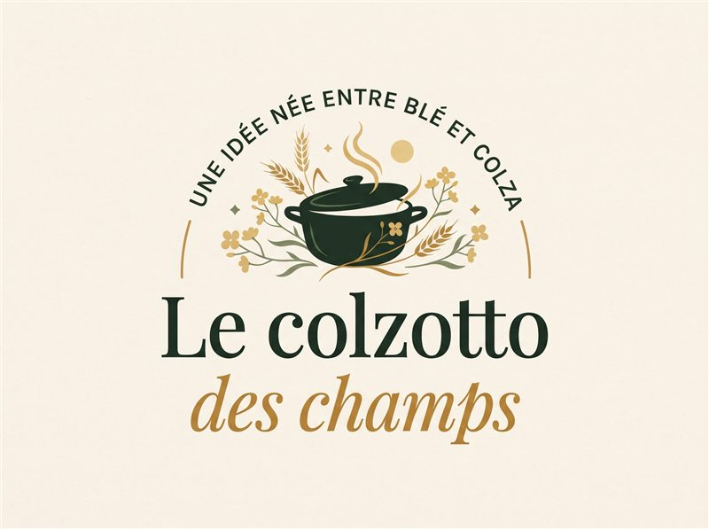

Faire dorer
Les champignons et l’oignon prennent leur temps dans un peu d’huile.
Du blé, du colza et beaucoup de goût
Du blé cuisiné façon risotto, des champignons dorés et une touche d’huile de colza : le colzotto marie les saveurs du terroir dans une assiette généreuse.


Le nom, en un dessinLe petit déclic
Notre cuisine met à l’honneur le blé perlé, les champignons et une finition parfumée à l’huile de colza. Une assiette généreuse, inspirée des saveurs de la Beauce.
Voir les ingrédients et l’idée complète ↗À table en trois temps
Une méthode simple pour obtenir des grains tendres et une texture liée. Ajuste le bouillon progressivement et goûte avant de servir.
Les champignons et l’oignon prennent leur temps dans un peu d’huile.
Le blé perlé s’enrobe des sucs avant l’ajout progressif du bouillon.
Une touche de crème et d’huile de colza lie le tout juste avant de servir.
Questions fréquentes
Le colzotto associe du blé perlé cuit doucement dans un bouillon, des champignons, de l’oignon, une pointe de crème et une touche d’huile de colza.
Le blé perlé cuit doucement dans le bouillon, puis les champignons dorés et l’huile de colza apportent profondeur et caractère.
La recette détaillée du colzotto donne les quantités pour deux personnes, le temps estimé et chaque étape de préparation.
À propos de ce site
Du blé perlé fondant, des champignons dorés et une touche d’huile de colza : une cuisine généreuse inspirée des paysages de Beauce.